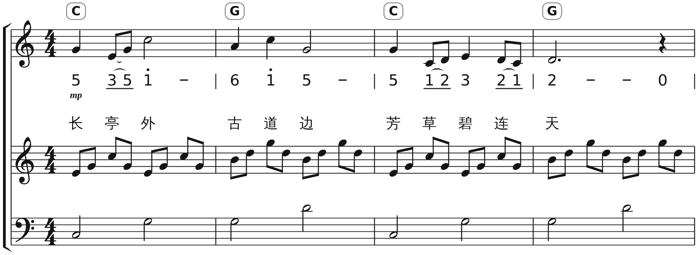
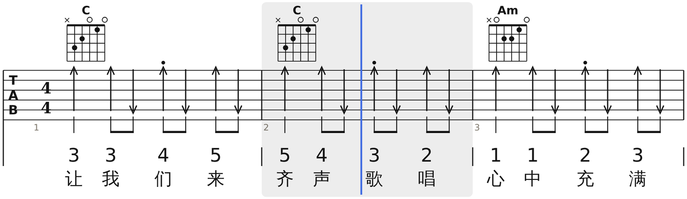
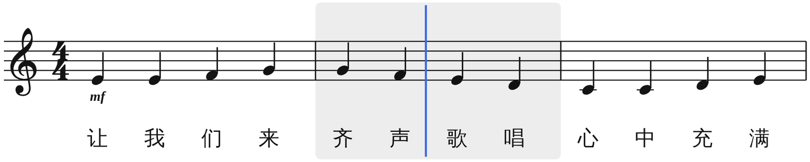
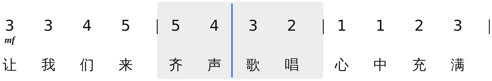

出版级 · 科教级制谱
谱友圈专业曲谱平台
简谱、五线谱、六线谱同一份数据一键互切，出版级刻版，智能配伴奏。
给考编、艺考、师范的老师和学生，也给每一位弹唱的人。
打开浏览器就能用 · 免注册 · 本地实时保存

三谱同源
写一遍，
三种谱同时就绪
简谱录入、五线谱交作业、六线谱给吉他手——它们是同一份数据的三种视图。改一个音，三处同步；移调不用重抄。
- 一键互切
- 简谱 · 五线谱 · 六线谱，教学对照谱逐列对齐
- 出版级刻版
- 符干、符杠、间距按《Behind Bars》与国标简谱惯例
- 无损互通
- MusicXML / MIDI 进出，MuseScore、Sibelius 直接打开



播放中 · 第 2 小节 三张谱同一时间轴0:04 / 0:22